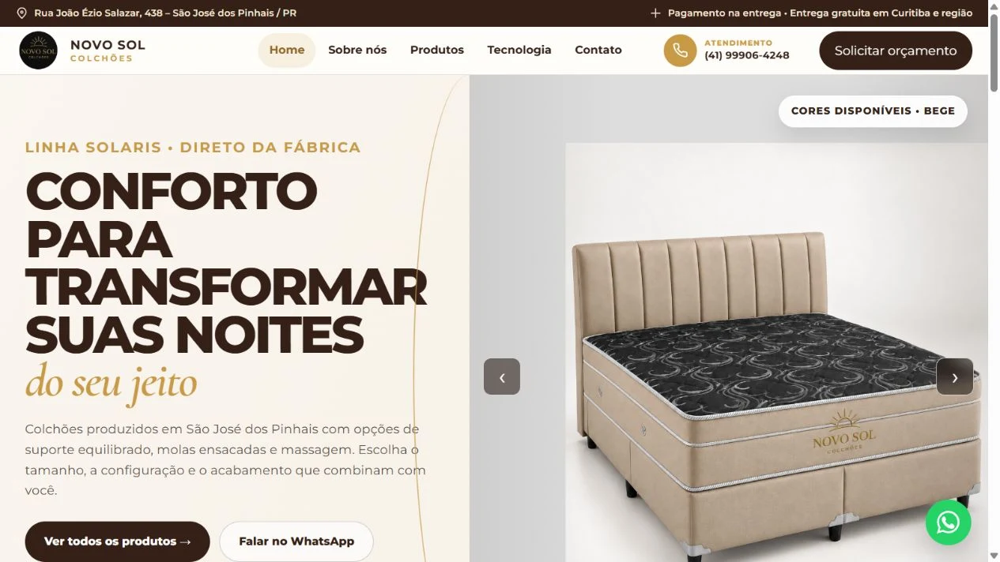
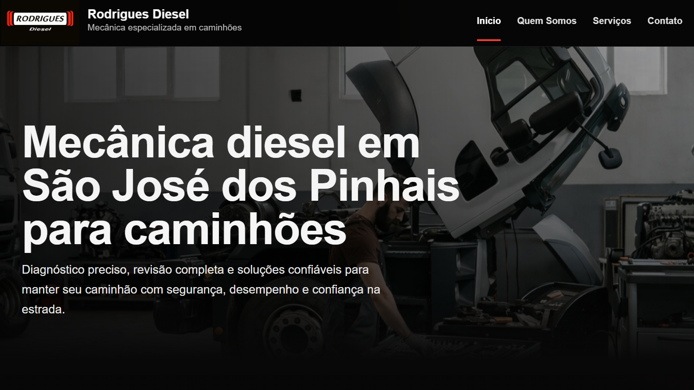
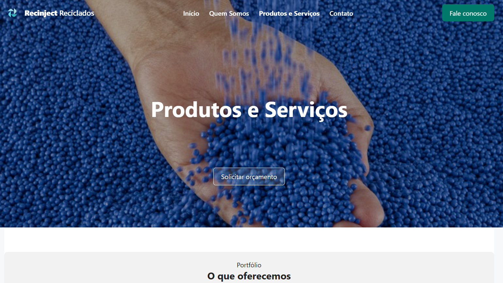
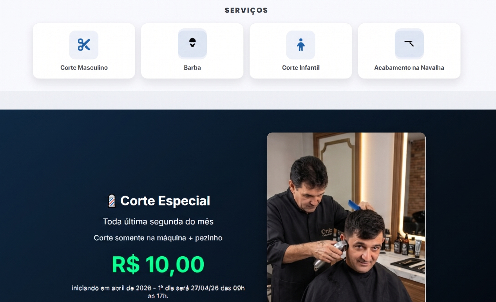
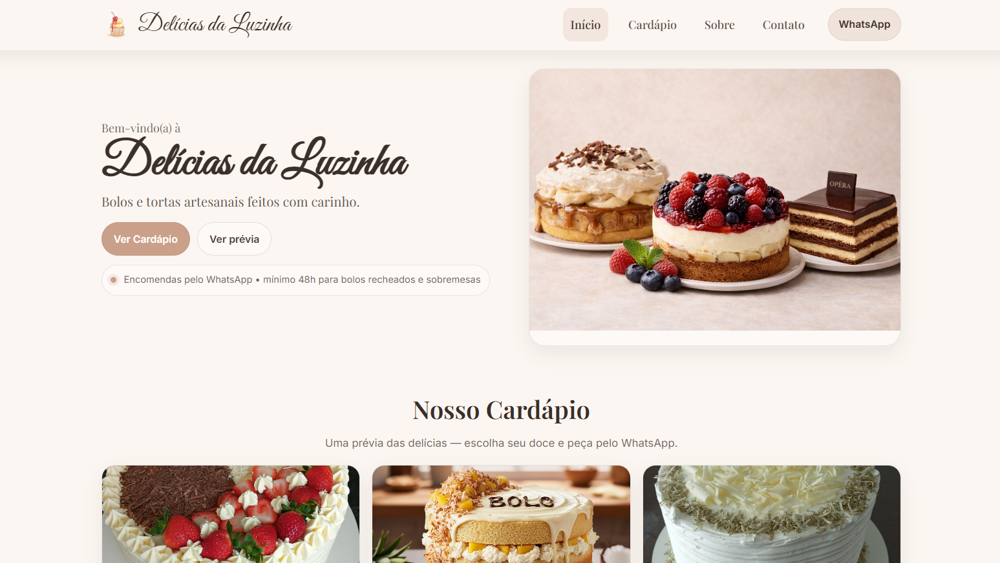
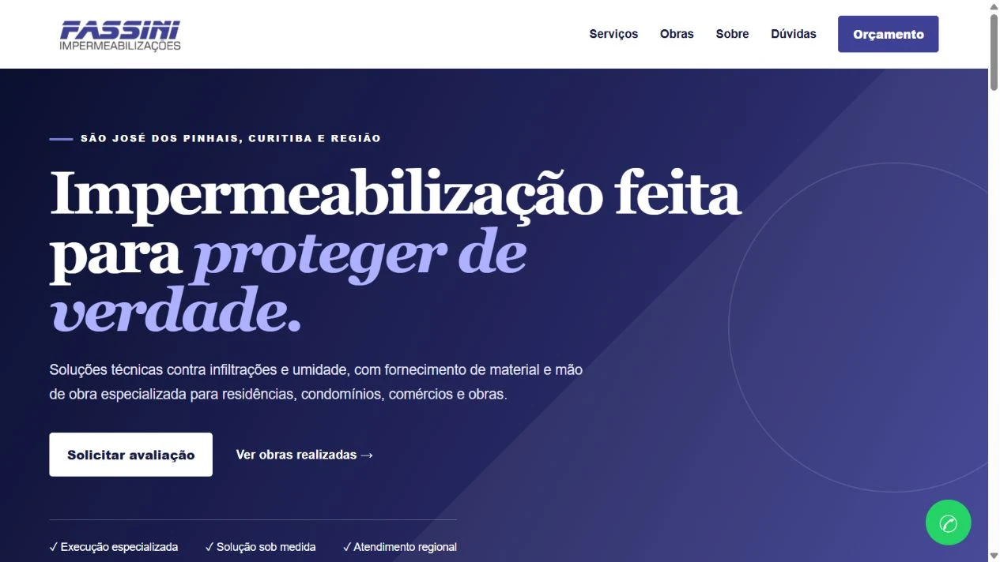

Site institucional · Catálogo
Novo Sol Colchões
Apresentação da fábrica e da linha de colchões, com catálogo de produtos e caminhos diretos para o atendimento.
Visitar projetoConheça trabalhos que mostram diferentes formas de conectar o negócio ao digital.
Exemplos reais de sites institucionais, páginas de serviços e catálogos. Acesse os projetos para conhecer cada experiência.

Apresentação da fábrica e da linha de colchões, com catálogo de produtos e caminhos diretos para o atendimento.
Visitar projeto
Apresentação dos serviços, da empresa e dos canais de contato para quem procura uma solução especializada.
Visitar projeto
Uma presença digital organizada para comunicar a atuação, os serviços e as informações da empresa.
Visitar projeto
Serviços, apresentação e contato em uma página objetiva, com acesso direto ao atendimento.
Visitar projeto
Produtos organizados para facilitar a escolha e conduzir o pedido para o WhatsApp.
Visitar projeto
Comunicação voltada à impermeabilização durante a obra, alinhando os serviços apresentados no site e no Google.
Visitar projetoO trabalho também acontece nos detalhes: serviços, descrições e informações que ajudam o cliente a entender a empresa.
Estruturação da comunicação dos serviços no Google, com foco em impermeabilização durante a execução de obras. Alinhamento entre a apresentação do site e a atuação da empresa.
Conhecer a empresa no GoogleTrabalho de revisão do posicionamento para comunicar tecnologia, inteligência artificial, atendimento e relacionamento, ampliando a clareza sobre as soluções da empresa.
Conhecer a empresaClientes, serviços, tarefas, despesas e resultados em um sistema pensado para prestadores de serviços e pequenas empresas.